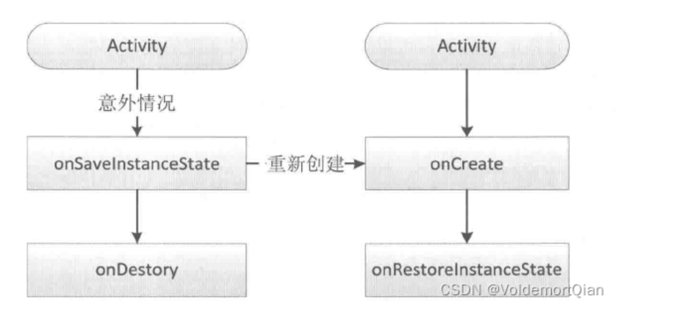

Activity
生命周期

- OnCreate()
在第一次创建活动时调用 这是你应该完成所有常规静态设置的位置：创建视图，将数据绑定到列表等。此方法还会为你提供一个包含Activity先前保存页面状态的Bundle对象（如果有的话），后面总是跟着onStart（）方法。
- onStart()
当Activity对用户变得可见的时候调用。如果活动进入前台，则跟随执行onResume（）方法，如果隐藏，则执行onStop（）。 此时，Activity实际上就已经可见了，但是还没有出现在前台，无法和用户进行交互。
- onResume()
此时，Activity已经可见，并且出现在前台并开始活动。
- onPause()
该方法后处于后台运行，可以对未保存的数据进行保存，停止消耗资源的行为，对用户部分可见。
onPause()方法在系统即将开始显示之前的界面时调用。 这通常用于将未保存的更改进行保存，并保存为持久化数据，并且会执行例如停止动画和其他可能消耗CPU的内容等。此方法的实现必须非常快速，因为在此方法返回之前，下一个界面不会显示。 如果界面返回到前台，则跟随onResume（）;如果对用户不可见，则使用onStop（）。
- onStop()
onStop()方法会在当界面对用户不再可见时调用，因为另一项界面正在显示并要去覆盖这个界面。 这可能是因为一项新的界面正在开始，其他的界面会被显示为前台界面，或者这个界面正在被摧毁。如果这个界面快速的回显与用户交互紧接着onRestart（）会被执行，否则，这个界面会调用销毁onDestroy（）方法会被执行。
- onDestory()
在你的界面被销毁前最后调用的方法。 这可能是因为界面正在结束（有人在其中调用finish（）方法因为系统会暂时销毁此Activity界面的实例以节省空间，你可以使用isFinishing（）方法区分内存空间是否节省资源的这两种情况）。
- onRestart()
在你的界面停止后调用，然后再次启动。 后面总是跟着onStart（）
onCreat和onDestroy 分别表示Activity的创建和销毁,只会调用一次. onStart和onStop 表示Activity是否可见,此时是后台可见;可以调用很多次,随着用户操控屏幕点亮熄灭会被调用; onResume 和onPause 表示Activity是否位于前台 可以调用很多次
注意：横屏和竖屏切换时会先销毁再重建
- OnSaveInstanceState() 方法是为了当用户暂时从您的应用切换到其他应用，并在稍后返回您的应用，他们希望界面状态保持不变。当Activity因系统限制而被销毁时，该方法和ViewModel()方法来保留用户的瞬时界面状态。
启动模式
- standard:标准模式
- 会创建新的Activity实例，并将该实例添加到当前Task内。
- singleTop:Task栈顶单例模式
- 若要启动的Activity实例，已经位于栈顶，将不会创建
- 若要启动的Activity实例，没有位于栈顶，将会创建新的实例，并把它加载到栈顶
- singleTask:Task内单例模式
- 若要启动的Activity不存在，且taskAffinity和当前Task不同，则会在新的Task中创建新的Activity实例，并将它放入栈顶
- 若要启动的Activity存在且在栈顶，则不会创建
- 若要启动的Activity存在且不在栈顶，则会将之上的Activity清除，使其位于栈顶
- singleInstance：全局单例模式
- 若要启动的Activity不存在，则会在新的Task创建新的Activity实例，并将它放入栈顶
-
若要启动的Activity存在，则会直接把Activity转到栈顶，且该Task只会有这个Activity。
-
Activity 属性
-
WindowSoftInputMode ：软键盘的输入
- 两类属性
类型 Value值 含义 显示与隐藏 stateUnspecified 软键盘的状态并没有指定，系统将选择一个合适的状态或依赖于主题的设置 stateUnchanged 当这个activity出现时，软键盘将一直保持在上一个activity里的状态，无论是隐藏还是显示 stateHidden 用户选择activity时，软键盘总是被隐藏 stateAlwaysHidden 当该Activity主窗口获取焦点时，软键盘也总是被隐藏的 stateVisible 软键盘通常是可见的 调整屏幕 adjustUnspecified 默认设置，通常由系统自行决定是隐藏还是显示 adjustResize 该Activity总是调整屏幕的大小以便留出软键盘的空间 adjustPan 当前窗口的内容将自动移动以便当前焦点从不被键盘覆盖和用户能总是看到输入内容的部分 -
configChanges
这个属性可以接受一系列的配置值，用来告诉系统在特定配置发生变化时，不要销毁和重新创建当前活动，而是由应用程序自己来处理这些变化。
值 说明 orientation 屏幕方向改变，比如从竖屏切换到横屏或者反之 keyboardHidden 键盘的可见性改变，比如键盘弹出或收起 screenSize 屏幕尺寸改变，比如平板电脑或手机横竖屏之间的切换 smallestScreenSize 最小屏幕尺寸改变，指的是屏幕的可用最小尺寸，例如在多窗口模式下调整窗口大小 screenLayout 屏幕布局改变，比如屏幕大小、分辨率等变化 uiMode UI 模式改变，比如夜间模式切换 -
onCreateView()方法
会在onCreate()时去渲染每个view,每个view完成后会进行这个方法的回调
启动流程和启动模式源码详解
主要方法
OnSaveInstanceState()&&OnRestoreInstanceState()
当一个Activity被kill之前，会调用onSaveInstanceState()来保存当前activity的状态数据。然后Activity重新打开时，用来保存状态信息的Bundle会同时传给两个方法,即onRestoreInstanceState() and onCreate()。
- 一般时机为系统异常退出时，会调用onSaveInstanceState()。
- 资源相关的系统配置发生改变导致Activity被杀死并重新构建
- 因为系统内存不足杀死某些低优先级的Activity而后重新构建
- 时机有：横竖屏切换、Home键、跳转到第三方应用时
onSavedInstanceState()就是系统会默认为我们保存当前Activity的视图结构，如文本框用户输入的数据，ListView滚动的位置等，这些View相关的状态都会为我们保存，其中的数据以Bundle数据形式进行存储，调用时机在onStop()之前。
OnRestoreInstanceState() 和 OnSaveInstanceState()并不在生命周期中。 OnRestoreInstanceState()在onStart()方法只有调用，将OnSaveInstanceState保存的数据恢复。

Activity中:OnSaveInstanceState保存的数据会在onCreate()中获取，在onCreate()中获取需要判断Bundle是否为空。
Fragment中：没有OnRestoreInstanceState方法，保存数据仍然在OnSaveInstanceState(),因此恢复数据应该放在onCreateView()和onActivityCreated()中。
但是有一种情况是不会走到OnSaveInstanceState()中，FragmentA 打开，然后打开FragmentB，接着返回A。
因此可以使用Fragment#arguments()在OnDestoryView中去保存数据。
onNewIntent()
如果在 AndroidManifest.xml 中，将 Activity 的 launchMode 设置成了 "singleTop" 模式，或者在调用 startActivity(Intent) 时，设置了FLAG_ACTIVITY_SINGLE_TOP 标识，那么，当该 Activity 再次被启动时，如果它依然存在于 Activity 栈中，并且刚好处于栈的最顶层时，那么它将不会被重新创建，而是直接使用原来的实例.
具体和启动模式的关系如下：
- SingleTop
如果当前任务的顶部已存在 Activity 的实例，则系统会通过调用其 onNewIntent() 方法来将 intent 转送给该实例，而不是创建 Activity 的新实例。
- SingleTask
如果另外的任务中已存在该 Activity 的实例，则系统会通过调用其 onNewIntent() 方法将 intent 转送到该现有实例，而不是创建新实例。Activity 一次只能有一个实例存在。
- SingleInstance
和SingleTask相似。
其次在使用StartActivity()中Intent.addFlags(FLAG_ACTIVITY_SINGLE_TOP),会调用onNewIntent()方法。
热启动不会走onNewIntent()。
onAcitivityResult
1.Activity和Fragment StartActvityResult()后，是分开的，结果如下：
Fragment.startActivityResult(intent,requestCode), Fragment#onAcitivityResult()会收到正确的requestcode,而Activity会收到RequestCode，但是结果不对。
Activity.startActivityResult(intent,requestCode), Activity#onAcitivityResult()会收到正确的requestcode,而Fragment不会收到RequestCode。
原理 在Fragment上发送的requestCode 会有进一步的处理，因此Fragment和Activity的RequestCode不能共用